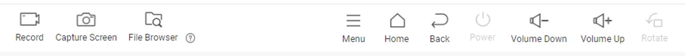
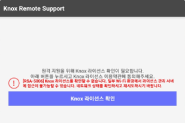
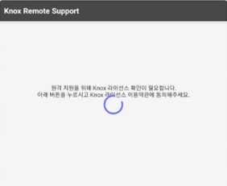

Use Samsung DeX during a remote session
Last updated May 29th, 2025
Samsung DeX is a feature that extends a Samsung mobile device’s interface to PC peripherals. With it, users can enjoy their Galaxy device on a desktop computer or connected to a display with a mouse and keyboard.
If your enterprise manages Samsung devices, you can employ Knox Remote Support and Samsung DeX mode in tandem. The user can put the device in DeX mode prior to starting the remote session. When the support specialist connects to the device using the Knox Remote Support viewer, they are offered a desktop-like environment with mouse and keyboard support, which enhances their productivity during the remote session.
- For devices running Android 15 (One UI 7.0) and higher, the DeX for PC app is no longer supported. For more information on supported devices, see the DeX compatibility section in the Set up and use Samsung DeX on your Galaxy phone or tablet page.
- For devices running Android 16 (One UI 8.0), the Knox Remote Support sessions are no longer supported in Samsung DeX mode.
Prepare the device profile for DeX mode
If the device is managed by a UEM, in order for Knox Remote Support to tunnel through DeX mode, the UEM must first grant Device Admin (DA) permissions to the Knox Remote Support agent.
If the device’s UEM is from a third party, then you must push the relevant policy that grants DA permissions to apps.
If the device’s UEM is Knox Manage, then you can configure a Knox Service Plugin policy to grant DA permissions to the agent. To configure that Knox Service Plugin policy:
-
In the Knox Manage console, go to Profile, then click the name of the device’s profile.
If you are using the new Knox Manage console, go to the original console to set policies in Knox Service Plugin.
-
Click Modify Policy.
-
If Knox Remote Support agent is installed in the personal profile, then set the following policies under Samsung Knox > Knox Service Plugin > Device-wide policies…:
Policy Value Enable device policy controls True Device Admin allowlisting > Enable device admin controls True Device Admin allowlisting > Allowlisted DAs Add an admin named Knox Remote Support -
If Knox Remote Support agent is installed in the work profile, then set the following policies under Samsung Knox > Knox Service Plugin > Device-wide policies…:
Policy Value Enable work profile policies True Device Admin allowlisting (Premium) > Enable device admin controls True Device Admin allowlisting (Premium) > Allowlisted DAs Add an admin named Knox Remote Support -
Save & Apply the policy.
Start a remote session in DeX mode
First, the device user must enter DeX mode and launch Knox Remote Support:
- Connect the mobile device to a desktop computer or peripheral combination. For help with this step, see Tips for getting started with Samsung DeX.
- Enter DeX mode.
- In the DeX interface, open Knox Remote Support.
- Click Start now when prompted to begin recording or casting.
The device is now ready to begin a remote support session. Initiating the session flow is like the regular Knox Remote Session experience.
To request a session, the support specialist must:
To begin the session, the device user must:
- In the DeX interface, enter the six-digit access code in the Knox Remote Support agent.
- If this is their first time accessing the Knox Remote Support agent in DeX mode, they must agree to provide Device Admin permissions to the agent.
The support specialist is now remotely connected to the device in DeX mode.
End a remote session in DeX mode
There are two methods of ending a remote session while in DeX mode:
- In the Knox Remote Support viewer, the support specialist clicks Disconnect.
- In the DeX interface, the device user exits DeX mode.
Knox Remote Support viewer and DeX mode
During a remote session in DeX mode, the following buttons are disabled in the Knox Remote Support viewer:

| Button | Description |
|---|---|
| Power | Disabled because it can’t control the external display connected through Samsung DeX. |
| Rotate | Disabled because, unlike a mobile screen, the external display connected using Samsung DeX cannot be physically rotated. |
Troubleshoot Knox license activation errors
With certain Samsung device models, when the device first enters DeX mode, it prompts the user to agree to the Knox license.
In some rare cases, agreeing to the license produces an RSA error.

Asking the Knox Remote Support agent to proceed typically resolves the issue.

See also
On this page
Is this page helpful?